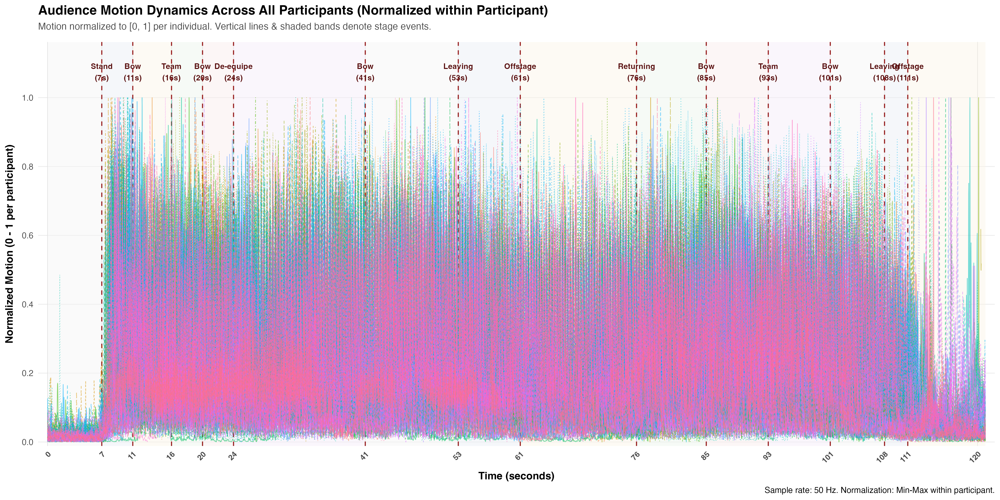
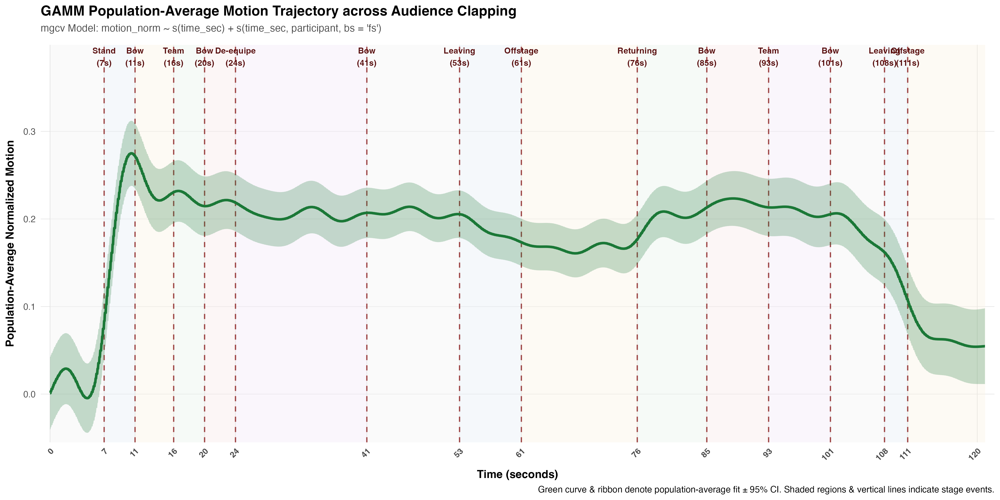

Listening to a room, one rhythm at a time.
One room. Many individual rhythms.
A concert becomes a dataset.
Three ways into the same applause.
From shared data to shared work.
VS Code and Copilot as the shared workspace.
Different systems, concurrent edits, and Git conflicts.
Setup across systems, environments, and Git.
From motion to patterns.


Give every peak a voice.
Identity maps to pitch and stereo position.
Peak height maps to loudness.
A second view brings the motion traces, statistics, and stage events together.
Open Applause Lab ↗NASA's Expedition 74 crew: our space stand-ins.